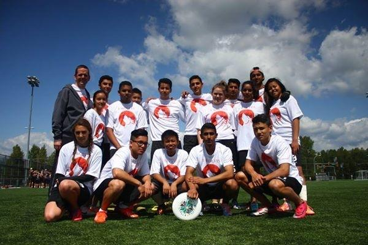
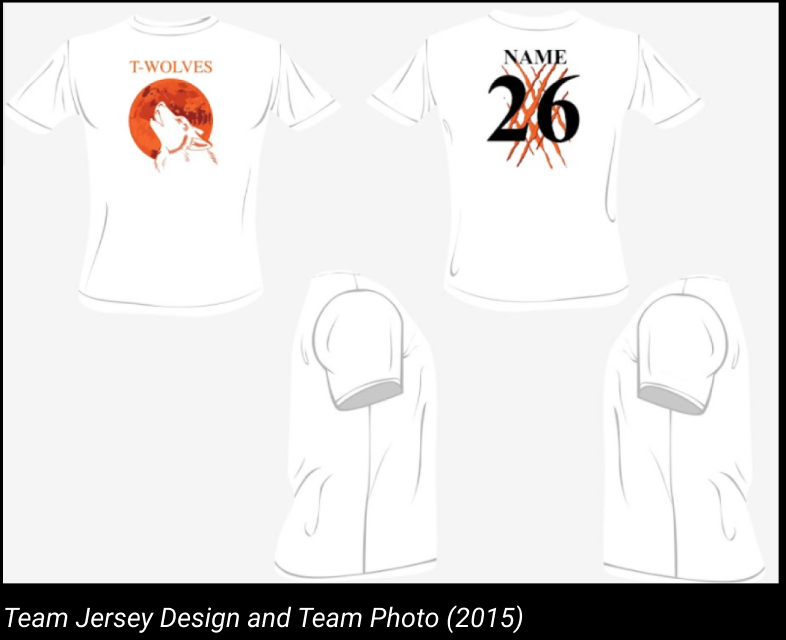
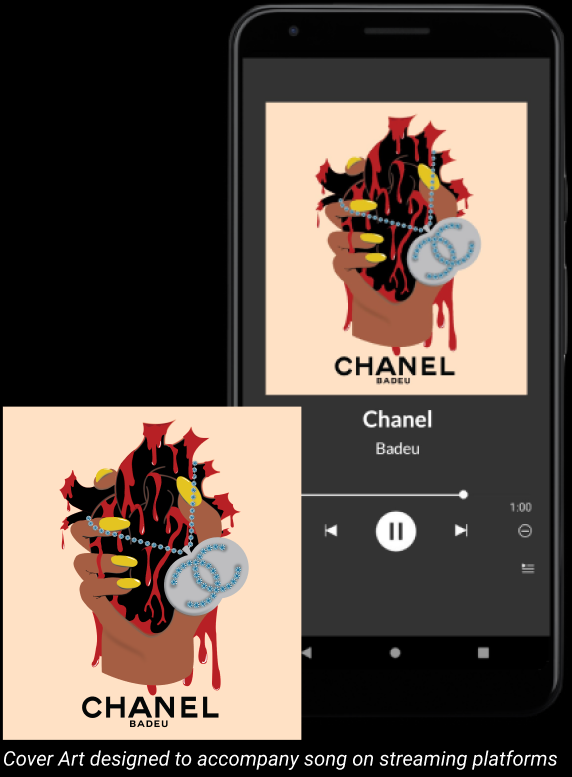

Graphic design has been an interest of mine for quite some time. I learned about graphic design in highschool and have developed the skills over the years
with different tools such as Adobe Photoshop and Illustrator as well as Figma. With these tools I have been able to create graphic art that ended up being used by
other individuals and groups.
First Project - Highschool Ultimate Frisbee Team Jerseys

This was my first real introduction to graphic design. I used Adobe Photoshop to create home and away jerseys for the senior ulimtate frisbee team
at Kwatlen Park Secondary school. The design was completed with input from players on colours, logo designs, secondary logo implmentation and more.
Once these suggestion by the team were made the design was completed and had made for the team to use during their games.
Projects for Friends - Music Cover Art

With my graphic design work I've been given the opportunities to work with local music artist to produce artworks for their music. One of the designs I created was for a local artist
who happened to be a friend to accompany the song that they created. Based on the lyrics of the song as inspiration I used Adobe Illustrator to create an art piece for them that
would be shown along with the song on streaming platforms. Once I showed them the artwork I asked for feedback on how I could make the artwork more suited to them. Once these
suggestions were provided I made the necessary adjustments and gave the design to them to use with the song.
Free Lance Work - Trucking Company Logo
My First paid commission work was for a trucking company in Abbotsford BC. They were looking for different designs that they could use for company branding. They heard that
I worked on graphic art from mutual contacts and asked me to help redesign their logo. I created different logos using Adobe Illustrator and then I presented these designs to
their team
Logo Design Ideation
From these suggested designs they liked the one shown on the left the most and asked for slight
modifications to fit their ideal look. Once I completed this for them I sent them a .zip folder with the logo in different file formats to use however they like. This ended
up also ended up being my first paid commission for digital artwork.
Challenges Learning Graphic Design
The main challenges I dealt with while learning graphic design were all the tools at my disposal with the programs I had. Tools like the Pen and Brush tool were very new concepts to me that I
took some time to figure out how to use. There were many times where I struggled to create a piece of graphic art because I was unaware of what tools I could use to create these desired artworks.
But over time with practice and research on the different tools I have in programs like Adobe Illustrator and Photoshop, I was able to learn how to effectively use these tools to create graphic
artwork that I can be proud of.